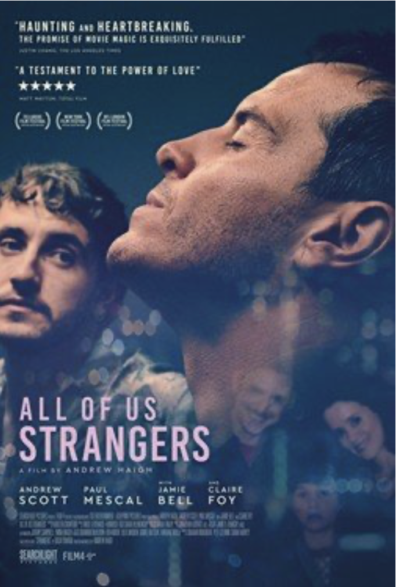

Movie poster for All of Us Strangers
Since the world is going to end, I thought I might as well watch the film du jour, All of Us Strangers (2023), Andrew Haigh’s fifth feature film and another gay tragedy to add to his canon. The film is based on Taichi Yamada’s novel Strangers (1987), the second adaptation of the ghostly novel and the notion of being haunted by ghosts of the past, that sap the life force endures as it is in Haigh’s adaptation, even if it is transported to a modern-day London and its deadly queer culture. Haigh seems to excel in depicting tragic gay stories, rife with a deep sense of loss and propelled by extraordinary force of self-destruction (this might be read as a critique, maybe?). Any urban (mostly white?) gay man can definitely relate to the drug pandemic taking over gay spaces (even spilling over to straight spaces, thanks to the gays), and wreaking havoc on the lives of so many. I want to say that this is a bourgeois vice, but even in Egypt, specifically recreational gay drug use, found its way to the most marginal and underprivileged of social spaces. And Haigh goes as far as grounding his entire narrative, as one bad, long ketamine trip.
Many a gay man can definitely relate to these drug-fuelled hallucinations that take one to the very edge of what they fear to even think about.
It is to Haigh’s credit that he found a genre of stories so well-suited to his narrative, Japanese literature and film has a long tradition of ghost stories, of menacing shadows that suck the life force out of the living, rendering them miserable or worse inflicting great pain and suffering and in many instances long protracted death. It is of course lamentable that in 2024 we are still talking about how most gay men are trapped in infantile narcissistic personality tropes, held hostage by childhood experiences of abuse or neglect, denial and even violence and inevitably suffering from stunted emotional and mental development, and along the way adopting those deadly coping mechanisms (hence the drug-driven excess and spectacular self-destruction, ironically done under the name of “a culture of celebration and life”). But then those make perfect victims for sinister shadowy ghosts of the past. In Haigh’s film another layer is added, because the protagonist's parents died at such a young age, cementing that effect of being trapped in the moment of loss. For other gay men, like the younger co-star, Harry (played by the mischievous and restless Paul Mescal), it's not actual death but a resigned acceptance of being severed from one’s parents and family (neither active disapproval nor a true acceptance). The result is the same, two gay men who are both unreconciled with their parents, desperately looking for love and acceptance and each developing all kinds of detrimental coping mechanisms.
Adam, the protagonist (played by Andrew Scott, who infuses the character with a bemused distance, teetering on exasperation sometimes, or incredulous indignation), is a writer who is not entirely healed from the loss of his parents nor the difficult childhood of growing up gay in the late 1980s. His reticent and distrusting nature propels him to reject the advances of his compulsively cheerful, cheeky neighbour Harry (of course hiding a more darker side to that exuberance), resulting in Harry’s death and the tragic punishment of Adam realising that he would have been happy with Harry, had he let go of his fear and rigidity. As if the loss of his parents is not enough, Haigh wanted to punish his protagonist even more, by showing the possibility of happiness, only to take it away, in the most cliched of ways – a drug overdose (in a grim scene where Adam discovers Harry’s slowly decaying corpse).
It seems that gay men are doomed to forever sabotage every chance at happiness or somehow a well-adjusted sense of reality. And while Haigh’s film can be seen as a teaching moment of self-acceptance and the imperative to trust (oneself and others), I cannot help but feel enormous resentment and dislike to this aestheticization of suffering. Tragedy porn, a genre we have to add to all (arty) gay films at the moment that all seem to revolve around how can we make gay misery aesthetically and visually stunning.
This is not to say that such events can’t take place, or are not plausible, they definitely are. Everyone of us can remember a (gay) friend who passed away from a drug overdose, or a friend who is a recovering addict or alcoholic, or a friend who sabotaged a possibly supportive and beautiful relationship. None of these facts, in themselves, are far-fetched or untrue.
But this spectacular relish of gay failure, of gay self-destruction, of placing those harrowing stories, in beautiful frames and against a gorgeous cinematography (Jamie D Ramsay’s brilliant, moody love letter to light), begs the question why must gay stories told with style and sincerity (and I do believe that there is something sincere in what Haigh did), be a testament to colossal loss and failure?
Even if done under the pretext of “realism” or “truth” and even if done “beautifully” (and Haigh’s film is beautiful).
Far from idealising any kind of relationship (romantic, familial or otherwise), one can still think and imagine a relationship that runs its course and does not result in spectacular self-destruction or untimely death. Or is queerness nothing more, than the art of dying spectacularly? I have now come to believe the latter.